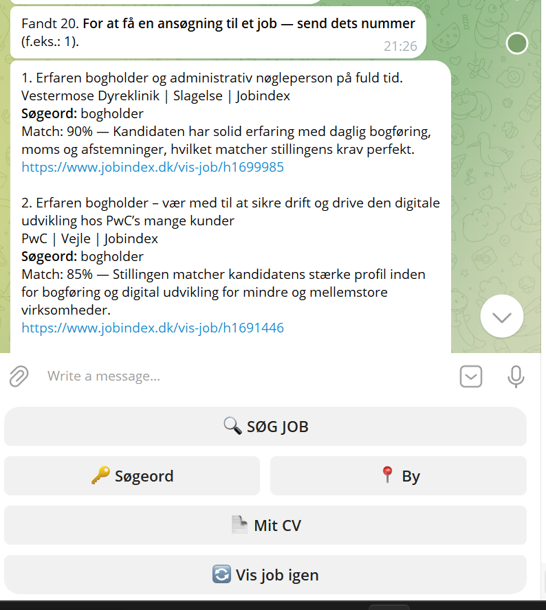
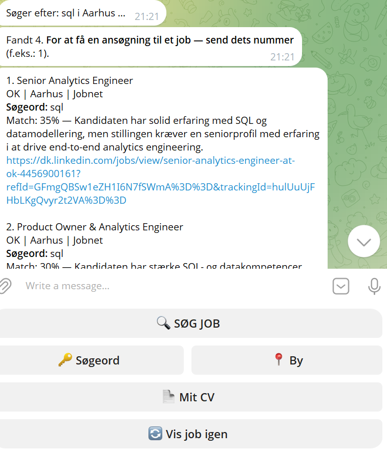
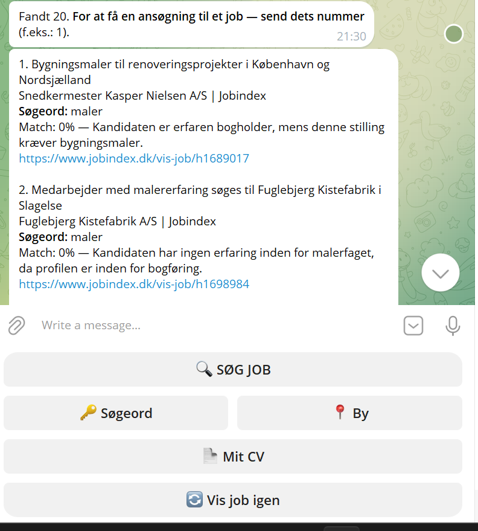

En Telegram-bot, der søger job i Danmark, sammenligner dem med dit CV ved hjælp af kunstig intelligens og udarbejder færdige dokumenter til ansøgningen — så du ikke skal gøre det manuelt hver gang.
Tre trin fra søgeord til en færdig ansøgning.
Botten henter job direkte fra Jobindex.dk og Jobnet.dk ud fra dine søgeord, med mulighed for at filtrere efter by. Resultater fra flere kilder samles, og dubletter fjernes automatisk.
Hvert jobopslag og dit CV sendes til Google Gemini, som vurderer det reelle faglige overlap — ikke bare fælles ord — og giver en match-procent med kort begrundelse.
Vælg et job, og botten udarbejder en ansøgning på dansk plus jobopslaget som PDF med udtrukne kontaktoplysninger. Du gennemgår og sender selv.
Det er ikke bare en søgning efter ens ord. Hvis der ikke er nogen relevant erfaring i CV'et til en stilling, viser botten ærligt 0% — uden "trøste-procenter". Jobbet forbliver alligevel på listen, for det er altid personens eget valg, om de vil søge.



Når du vælger et konkret job, udarbejder botten 2 dokumenter på under et minut:
Bygget som et selvstændigt Python-projekt med fokus på pålidelighed og enkel drift.